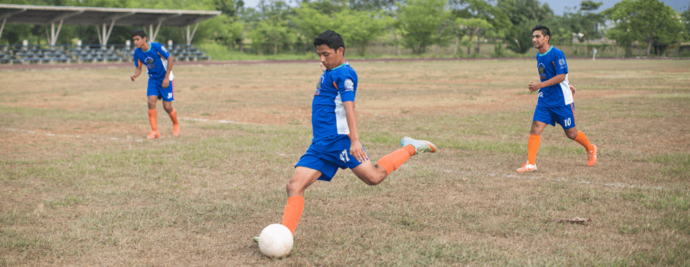
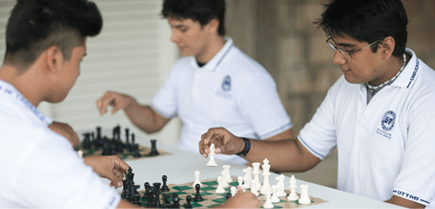

ACTIVIDADES CULTURALES Y DEPORTIVAS
El Departamento de Actividades Culturales y Deportivas tiene como
objetivo contribuir a la formación integral innovadora de los alumnos
a través de ofertar talleres de cultura y deportes, organizar eventos
que promuevan la cultura de expresiones artísticas y la actividad
física como medio de desarrollo personal competitivo, integración
social y mejora de la calidad de vida.

Culturales

- Artes (pintura, dibujo)
- Literatura (poesía, narrativa, cuento)
- Teatro (oratoria, declamación, muñecos animados)
- Manualidades (creatividad manual)
- Música (instrumentos, canto)
- Editorial
Deportivas

- Ajedrez
- Voleibol
- Fútbol
- Sóftbol (béisbol)
- Aeróbics (Fitness)
- Básquetbol